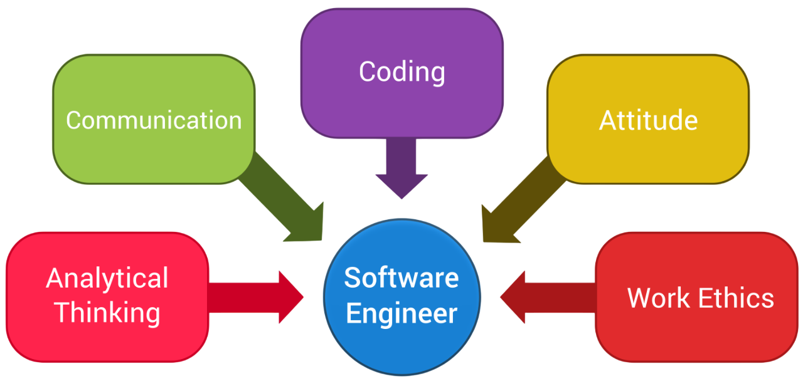

What You Can Expect From Me
Read below for a list of the skills and technologies I have experience in.
- IBM i Technologies: RPGLE (Free/Fixed), SQLRPGLE, CLLE, DDS, IBM i Application Development
- Database & SQL: IBM DB2 for i, Embedded SQL, SQL(DDL/DML), Stored Procedures, Functions, Relational Database Design, Query Optimization
- Web Services & Integration: RESTful APIs, JSON, HTTP/HTTPS, Web Service Integration, Backend Business Logic
- Tools & Methodologies: IBM Rational Developer for i (RDi), VS Code, Git, GitHub, Agile/Scrum, Full Software Development Lifecycle
- AI Tools: IBM Bob, ChatGPT, GitHub Copilot & Google Gemini
- Programming Languages: C++, C, Java, JavaScript, Python, PHP, HTML, & CSS
